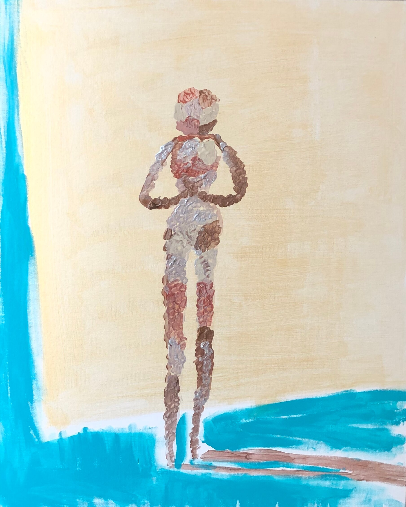

What is painting anyway?
Put the right color at the right place.
This is what I learned when studying Vincent Van Gogh's paintings.
But what is a right color?
But what is a right place?
Isn't magic happening at the wrong moment? Paint something you captured, from your memory, even if it's wrong. But hey, who says processed information is not an information?
Take the below painting as an example, it's not right colors, it's not right shape, but I think it's still beautiful, isn't it?
到底什么是绘画？
把正确的颜色放在正确的位置。
这是我最近研究梵高的画学到的。
但什么是正确的颜色呢？
但什么是正确的位置呢？
难道魔法不都是在不正确的时间点发生的吗？画你抓住的东西吧，从记忆里，哪怕不正确。谁说处理过的信息不是信息呢？
看看上面那副画，没有正确的颜色，也不是正确的形状，但我认为它仍然很美，不是吗？